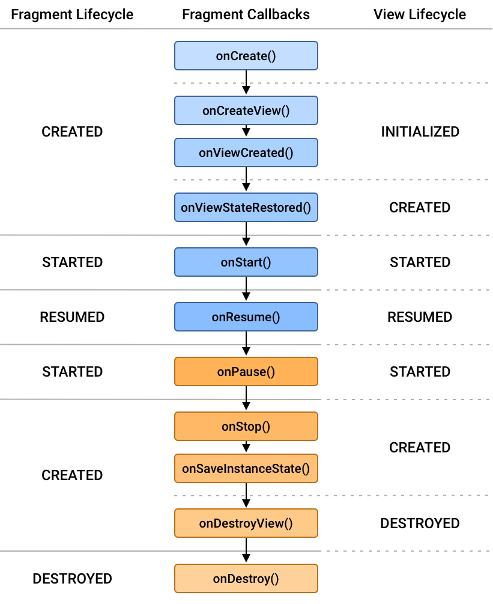
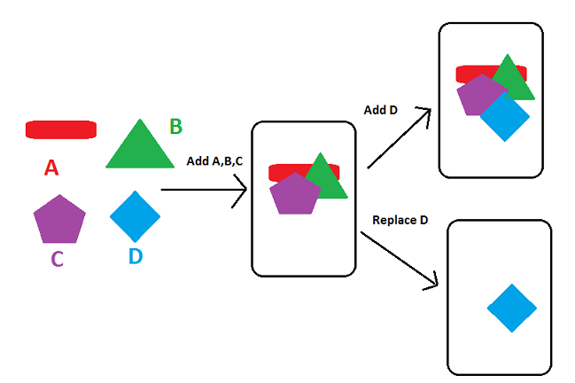

Fragments¶
Documentació oficial
- https://developer.android.com/guide/fragments
Exemple pas a pas - https://cursokotlin.com/capitulo-22-fragments-en-kotlin/
1-Introducció als Fragments Què són i per què utilitzar-los?¶
Definició: Components reutilitzables d'UI que representen una part d'una pantalla dins d'una Activity. Cada fragment té el seu cicle de vida. Han d'existir dins d'una activity o d'un altre fragment.
Avantatges:
-
Reutilització: El mateix fragment pot usar-se en múltiples activities.
-
Disseny adaptable: Diferents layouts per mòbils/tablets.
-
Modularitat: Divideix la UI en components independents.
-
Comparació: Els fragments són com "sub-activitats" amb cicle de vida propi.
Mostra visual d'una activity amb 2 fragments:

2-Anatomia d'un Fragment¶
Estructura bàsica¶
Els fragments tenen layouts igual que les activities, en xml.
També tenen la seva classe Fragment() de la qual herata i sobreescriu mètodes clau:
class NewFragment : Fragment() {
override fun onCreate(savedInstanceState: Bundle?) {
super.onCreate(savedInstanceState)
}
override fun onCreateView(
inflater: LayoutInflater, container: ViewGroup?,
savedInstanceState: Bundle?
): View? {
// Inflate the layout for this fragment
return inflater.inflate(R.layout.fragment_blank, container, false)
}
override fun onViewCreated(view: View, savedInstanceState: Bundle?) {
val someInt = requireArguments().getInt("some_int")
...
}
Mètodes essencials:¶
-
onCreateView(): Infla el layout i retorna la View.
-
onViewCreated(): Configura les vistes un cop creades.
Cicle de vida del Fragment¶

Punt important: onDestroyView() es crida abans que onDestroy(), alliberant la vista.
Referència: Cicle de vida dels Fragments: https://developer.android.com/guide/fragments/lifecycle
3-Implementació Bàsica¶
Afegir fragments a una Activity¶
Mètode estàtic: Via XML amb etiqueta (per fragments fixos).
<androidx.fragment.app.FragmentContainerView
xmlns:android="http://schemas.android.com/apk/res/android"
android:id="@+id/fragmentContainerView"
android:layout_width="match_parent"
android:layout_height="match_parent" />
FragmentManager i FragmentTransaction¶
Referències: https://developer.android.com/guide/fragments/fragmentmanager
El fragmentmanager és la classe responsable d'afegir, eliminar i la resta d'accions sobre un fragment. Al fragmentmanager hi accedim des de l'activity a través de la funció supportFragmentManager.
Des del fragment, podem accedir al fragmentmanager de la app, amb la funció getParentFragmentManager().

Afegir fragment a un fragmentcontainer¶
Hi ha 2 maneres de carregar un fragment, afegint-lo a l'stack, o reemplaçant-lo.
- BackStack: Permet tornar enrrere per tota la pila (stack) de fragments afegits.
- Replace: Substitueix la pila anterior per un altre. Només es pot tornar al fragment substituit.

//Afegeix el fragment i l'afegeix a la pila (backstack)
// de manera que tornar enrrere, tornara al fragment anterior.
private fun addFragment(fragment: Fragment,args : Bundle?) {
fragment.arguments = args
val fragmentTransaction = supportFragmentManager.beginTransaction()
fragmentTransaction.add(R.id.fragmentbottom, fragment)
fragmentTransaction.addToBackStack(null)
fragmentTransaction.commit()
}
//Intercanvia el fragment. Tornar enrrere no tornara al fragment anterior.
private fun replaceFragment(fragment: Fragment,args : Bundle?){
fragment.arguments = args
val fragmentTransaction = supportFragmentManager.beginTransaction()
fragmentTransaction.replace(R.id.fragmentbottom, fragment)
fragmentTransaction.commit()
}
Amb la versió més moderna (segons la documentació de android).
Cal afegir les dependiencies:
dependencies {
implementation "androidx.fragment:fragment-ktx:1.6.2"
// o la versió més recent disponible
}
i el codi es transforma en el següent:
private fun addFragment(fragment: Fragment, args: Bundle?) {
supportFragmentManager.commit {
setReorderingAllowed(true)
add(R.id.fragmentbottom, fragment::class.java, args)
addToBackStack(null)
}
}
4-Comunicació¶
Accedir a l'Activity des del Fragment¶
De vegades necessitem accedir a l'activity, per exemple si necessitem modificar la appbar o toolbar.
// Forma segura - llança excepció si no hi ha activity
val activity = requireActivity()
// Forma nullable - retorna null si no hi ha activity
val activity = activity
// Modificar Toolbar
(requireActivity() as AppCompatActivity).supportActionBar?.title = "Nou Títol"
Patró de Callbacks¶
class ExempleFragment : Fragment() {
interface OnDataListener {
fun onDataReceived(data: String)
}
private var callback: OnDatatListener? = null
override fun onAttach(context: Context) {
super.onAttach(context)
if (context is OnDataListener) {
callback = context
} else {
throw RuntimeException("$context must implement OnDataListener")
}
}
override fun onDetach() {
super.onDetach()
callback = null
}
// Exemple: algú prem un botó al fragment
private fun enviarDades() {
callback?.onDataReceived("Hola des del fragment!")
}
}
class MainActivity : AppCompatActivity(), ExempleFragment.OnDataListener {
override fun onDataReceived(data: String) {
// Fer alguna cosa amb les dades rebudes
Log.d("MainActivity", data)
}
}
Amb shared Viewmodels¶
Vegeu documentació a Shared Viewmodels
5-Animació de les transicions entre fragments¶
Podem definir les animacions a la carpeta res/anim (tipus anim)
Arxius:
fade_out.xml
<!-- res/anim/fade_out.xml -->
<?xml version="1.0" encoding="utf-8"?>
<alpha xmlns:android="http://schemas.android.com/apk/res/android"
android:duration="@android:integer/config_shortAnimTime"
android:interpolator="@android:anim/decelerate_interpolator"
android:fromAlpha="1"
android:toAlpha="0" />
fade_in.xml
<!-- res/anim/slide_in.xml -->
<?xml version="1.0" encoding="utf-8"?>
<translate xmlns:android="http://schemas.android.com/apk/res/android"
android:duration="@android:integer/config_shortAnimTime"
android:interpolator="@android:anim/decelerate_interpolator"
android:fromXDelta="100%"
android:toXDelta="0%" />
fragmentTransaction.setCustomAnimations(
R.anim.fade_out, // exit
R.anim.fade_in, // popEnter
)
Definir la animacio en entrar o sortir en el onCreate¶
Es creen els arxius en la carpeta res/transition (type transition)
Arxiu fade.xml
<!-- res/transition/fade.xml -->
<fade xmlns:android="http://schemas.android.com/apk/res/android"
android:duration="@android:integer/config_shortAnimTime"/>
<slide xmlns:android="http://schemas.android.com/apk/res/android"
android:duration="@android:integer/config_shortAnimTime"
android:slideEdge="right" />
en els fragments:
class FragmentA : Fragment() {
override fun onCreate(savedInstanceState: Bundle?) {
super.onCreate(savedInstanceState)
val inflater = TransitionInflater.from(requireContext())
exitTransition = inflater.inflateTransition(R.transition.fade)
}
}
class FragmentB : Fragment() {
override fun onCreate(savedInstanceState: Bundle?) {
super.onCreate(savedInstanceState)
val inflater = TransitionInflater.from(requireContext())
enterTransition = inflater.inflateTransition(R.transition.slide_right)
}
}